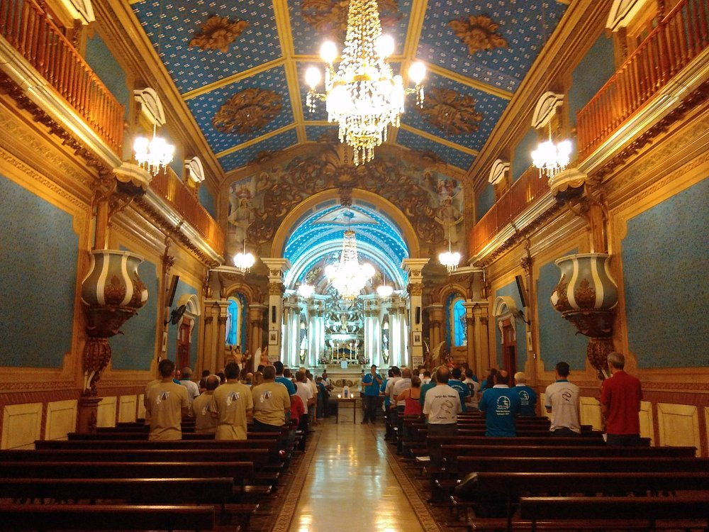

Os principais pontos turísticos da nossa Maravilhoa Cidade
Horto Florestal
O Horto Florestal de Limeira é um espaço verde que oferece diversas atividades ao ar livre.

Igreja da Boa Morte
Patrimônio histórico e religioso da cidade.
Estádio Limeirão
O estádio Major José Levy Sobrinho, casa da Internacional de Limeira.

Parque Cidade de Limeira
Área de lazer e eventos para toda a família.
Zoológico Municipal
Conheça a fauna e flora da região.